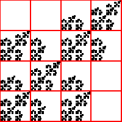
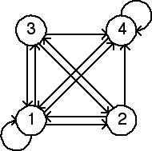

| 3(d) |  |  |
| The empty length 2 addresses are 22, 24, 33, and 34. Thus the forbidden
transitions are | ||
| This fractal has two romes, address 1 and address 4. Moreover, there is a path from a rome (1) to
each of the non-romes, so this fractal can be generated by an IFS without memory. Because there is a
loop | ||
Return to Homework 2 Practice.